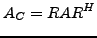
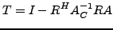
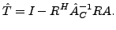

Most algebraic multigrid methods use the Galerkin operator
|  |
Nevertheless the use of the Galerkin operator has one big downside. As it is essentially formed by applying the fine level operator to the prolongated vector and restricting the result back to the coarse level, the stencil describing the operator grows. Consider the 5-point approximation of the Laplacian on a uniform grid in two dimensions. In that case the Galerkin operator on the coarser level will be represented by 9 points, resulting in a higher complexity per unknown on that level. While this is not a big problem for stencils involving only nearest neighbors, the problem gets more severe for very large and sparse stencils. We were interested in replacing the Galerkin operator by some similar operator, which does not posses this behaviour.
For that purpose we analyzed the convergence proofs for algebraic multigrid methods by Ruge and Stüben and derived some sufficient conditions for convergence of multigrid methods not using the Galerkin operator on the coarse level. It turns out that it is actually possible to use another operator, that is close to the Galerkin operator and fulffills some other purely algebraic conditions. We replace the original coarse grid correction
|  |
|  |
In the the talk an outline over the altered convergence analysis including a discussion of the sufficient conditions will be given and some examples will be presented.